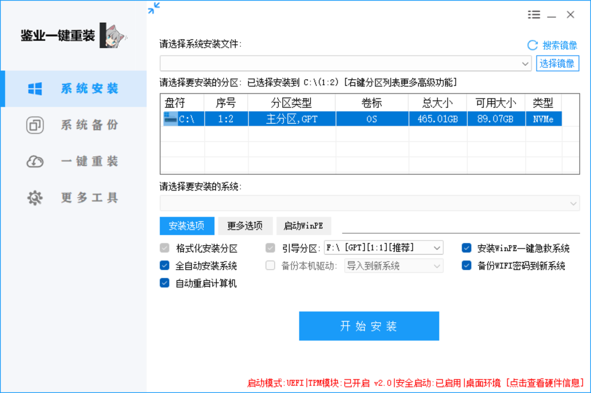

别再忍了，一次重装，满血复活
开机要等 5 分钟，打开个网页转圈半天。垃圾越堆越多，怎么清理都无济于事。
误装全家桶软件，桌面弹窗一个接一个，卸了又装、装了又弹，烦不胜烦。
想重装系统，却被"BIOS 设置""分区格式""引导模式"这些术语吓得不敢动手。
与软件界面一一对应，点哪里、会什么，一目了然
自主选择镜像与分区，自动识别 GPT / 主分区 / NVMe，格式化、引导、驱动一键配齐。
重装前把重要资料和系统状态完整备份，随时回滚，再也不怕数据丢失。
选好系统点"开始安装"，全自动完成后续流程，自动重启进入全新系统。
内置 WinPE 急救系统、硬件信息查看等实用维护工具，日常问题信手拈来。
全程无需理解任何专业术语
获取「鉴业一键重装」，双击打开即可使用，界面简洁，所有状态一目了然。
一键搜索系统镜像，工具自动识别硬盘分区并给出推荐选项，无脑点确认就行。
剩下的事交给它：自动安装、自动重启、自动进新系统，泡杯茶回来就是全新的电脑。
启动模式、安全启动、硬件信息全部自动检测并标明
可以。工具把格式化、引导分区、驱动备份等专业操作全部自动化，你只需要选好系统、点"开始安装"，其余流程全自动完成。
建议重装前使用"系统备份"功能备份重要文件。工具还支持备份本机驱动和 WiFi 密码并自动导入新系统，减少重装后的麻烦。
工具启动后会自动检测并显示启动模式（UEFI / Legacy）、TPM 模块与安全启动状态，无需你自己进 BIOS 查看。
工具支持"安装 WinPE 一键急救系统"，即使系统无法启动，也可以通过 WinPE 环境进行重装和救援。